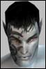

| Pages (3): « 1 [2] 3 » |  Last Thread Next Thread Last Thread Next Thread  |
| Author | Thread |
| Palmero Supa Leet  Registered: Mar 2002 | Shub no they dont.. i am the one whit the limeted damage (0 nano = dead NT) healers like low damage its easyer to heal. so low damage = good for healer and bad for damage dealers like Soldier and NTs (we have noway to heal and we can do enuf damage). so dont tell me that bracers helps me.. ok so we remowe the bracers that wont help.. WOW i can do 980 damage (or somthing) and u can heal whit CH 10k hmmmmmmmmmmmmmmmmmm i wonder if its fair.. the problem is that u want to be uber you dont want a fair pvp system whit 100% damage and 100% heals. even when we giw u easy exampels so that even the dumbest one can se that somthing is wrong u come back and post somthing stupid.. (ops im flaming you. sorry) why cant you giw me a good reason behinde your anti 100% damage in pvp (whit damage caps) campain. pleas show me that im wrong so i can join your side in this.. but right now i dont se eny reason to the 50% damage ws 100% heals in pvp /Tolbat |
 August 21st, 2002 01:27 August 21st, 2002 01:27 | #21 |
| Crazin_Azin Phear Leet  Registered: Mar 2002 | Nerfing never solves anything! Dont you people ever learn? |
| August 21st, 2002 08:13 | #22 |
| tinytoon Phear Leet  Registered: Jul 2002 | Hehe Tolbat 100% dmg isn´t the best idea....everyone will run arounf and alpha each other.....One alpha-strike will be = death Cap heals at 50% instead |
| August 21st, 2002 08:48 | #23 |
| Palmero Supa Leet Registered: Mar 2002 | Caping heals? the only heal that would be nerft like hell is CH the rest of the heals would stay the same. and Crazin "Lilasiandude" Azin i dont want to nerf eny thing i want to fix Damage in pvp |
| August 21st, 2002 13:51 | #24 |
| Fryli Supa Leet Registered: Jan 2002 | quote:I only have one question....have u heard of i.e ranged weapons... because i see quite a few nt's that use them to dish out damage with on top of their nukes  |
| August 21st, 2002 14:21 | #25 |
| Palmero Supa Leet Registered: Mar 2002 | yes i do use a weapon. so IEF and a weapon can do more damage then CH can heal? Nope no way in hell.. and the MA will outdamage me (yes i use weapon) and he/she can heal. Soldiers and NTs have no heals (ok soldiers have a crapy DoT heal but they cant use TMS and that heals so ther is no point in useing it) so NTs and soldiers should do fast damage becous they cant heal. well they did, but they did it to fast so they nerft damage like hell and what happend. 1, heals wher made uber 2, soldiers couldent do enuf damage fast enuf 3, NTs died like hell no defens what so ever and they cant do fast damage so the profesions whitout heals that wher supost to do fast damage was nerft like hell and professions like Docs and Traders ownd (ok they nerft the traders heals now). so now you have the healing professions and the nerft damage dealers hmm and traders who can OE your gun and debuff your skills  why is it so hard to c that 50% damage ws 100% heals is unfair? it only helpt the Healers and nerft the damage dealers. DONT nerf heals fix Damage in pvp 100% damage ws 100% heals (whit damage caps) is the only way to fix this.. / Tolbat / Tolbat |
| August 21st, 2002 14:57 | #26 |
| Tronika Leetas  Registered: Jul 2002 | The funny thing about this is uber armor: (Damage from gun/2) - (damage taken from ACs)= really low shots Im a 101 nanomage fixer (ya ya, i made a bad choice) and have killed only one person in PvP which happened to be a doc (very easy) PvPing isnt fun for me (you probably know that), but i have some suggestions: Make cyber/nano armor better In PvP, take the damage cap off so i can do about 100 more points of damage! I recently got murdered in MMD from a 104 fixer (ya, a fixer). I couldnt even stand within 10 miles of this guys power, he gets a 1200 burst and i get a friggin 120? Through the rest of the fight, i get maybe one shot over 100. Where is the justice? I like hanging out in MMD to kill peoples about 25 lvls below me but i wouldnt be surprised if they kicked my azz there. FC seriously overestimated the pvp ranges, a 200 killing a 75; thats like running over a RC car with a monster truck. But ill even take it to soloing. Soloing a green is a serious pain because cyber armor is bogus and the same with nano. If you dont want to make the ACs better with cyber/nano, at least tempt us to want to wear it with maybe some modifiers. The NCUHI was really good, but it isnt enough for me and my fixerly nanomage brothers and sisters out there. Sure, i hear all about GA, but where is it? I killed 500-600 plants and not a GA disc in sight, i can even count how many fixer discs i actually got: 7! Raise the mat crea requirement by 10% and make our nano skills light blue. And plz FC, raise the drop rate so the prices will go down or i can find one and never darken the doors of a post that i plead from At times i wish i could quit, but then i remind myself of how much time i put into this character and how much time ill get back from it. Enjoy my 2 cents! |
| August 24th, 2002 17:46 | #27 |
| Czarina Supa Leet  Registered: Jul 2002 | quote:I think a lot of people are asking for a nerf... they are asking for things to be UNNERFED. ... yes, damage was nerfed... it was nerfed to 50% in PvP... heals and shields remain unnerfed in PvP in the same time period, so this makes 1) shields overpowered 2) heals overpowered I haven't PvP'd in quite awhile because of the stupid PvP 50% dmg vs. 100% heals. My lvl 171 doc friend said he had a hard time as a doc finding anyone who is willing to duel him. As has been stated damage was nerfed because crits were overpowered and fights were too short... crits have been fixed, so let damage be returned to normal. UNNERF THE Damage dealers! |
| August 24th, 2002 18:22 | #28 |
| Kuro Am I here yet?  Registered: Nov 2001 | I just have a small question for people saying 50% heal in PvP: How would the system know? How would the system know you're trying to heal yourself because you're fighting another person in PvP? Versus knowing you're trying to heal yourself because some MA mob is pounding you into a pulp? |
| August 24th, 2002 20:01 | #29 |
| Ejeckted Supa Leet  Registered: Nov 2001 | yup. the game has no way of knowing if you're healing mob-inflicted damage or player-inflicted damage. so even if the 50% healing arguement is right (and i do agree), it's never going to 'win' because it's not possible to implement. and if player vs player auto initiates halved healing, then: -OMNI team hunting in a political zone -OMNI doc healing her team who are fighting mobs -CLAN PKer attacks OMNI doc -OMNI docs heals are suddenly 50% -OMNI team dies to mobs, not the PKer. one person could take out a whole team this way, by just timing his attack to a heavy pull. Funcom (and the majority of players who hate PvP) wont allow this. the real solution is to balance player vs mob HP and damage, and have one game with one set of rules instead of two, but i think it's safe to say that's not likely to happen this late. |
| August 24th, 2002 23:36 | #30 |
| Palmero Supa Leet Registered: Mar 2002 | hmm am i the only one who can read the title on this thread? "100% damage NOW!!!" not "50% healing" so why are u talking about 50% heals and debating that it would be a MA nerf when all i want (and what this thread is allabout) is 100% damage in pvp (whit damage caps).. so pleas stop posting about 50% heals in pvp in the 100% damage thread... Thx /PS if the game can calc 50% damage in pvp i dont think it will have problems whit 50% heals in pvp (but that is not what i want or what this forum is all about so lets stop talkin about 50% heals) / Tolbat |
| August 25th, 2002 00:12 | #31 |
| Ejeckted Supa Leet Registered: Nov 2001 | quote:nope. 2 totally different circumstances. game knows Player A is attacking Player B. game can half damage easily of A against B. there is a solid link with no complications. A---x50%---B game has absolutly no way to keep track of which portion of your max health a mob damaged and which portion a player damaged. the real-time math involved would be mindboggling, the lag created by attempting it would be insane. think about it, Player A is getting hit by Player B and Mob at the same time. Player A casts a heal . . . whose damage is he healing? Last edited by Ejeckted on August 25th, 2002 at 04:56 |
| August 25th, 2002 04:54 | #32 |
| Palmero Supa Leet Registered: Mar 2002 | well i dong giw a sheet cous this thread is about 100% damage and not 50% heals.. the problem is that u dont understand that... / Tolbat |
| August 25th, 2002 12:52 | #33 |
| jamster Leet Registered: Aug 2002 | To all you ENF that cry for heal nerf. mayby they should nerf you mongo line in half in pvp to then |
| August 25th, 2002 13:24 | #34 |
| Vydas Supa Leet  Registered: Feb 2002 | I'm wondering why there should be two different scales? I think that's the point. If it isn't pragmatic to half healing so that it's on the same scale as damage currently is, then why not raise damage so that it's on the same yardstick as healing? What, precisely, are the arguments against that - making them all par? |
| August 25th, 2002 13:28 | #35 |
| Lostpacket Leetas Registered: Apr 2002 | 100% damage does not work 100% damage would suck ass just like it did before. Why ?? Agents would be the ONLY pvp class. X-3's crank out 10k AS all day long - most professions got less than 10k hps. hell - make that a atrox agent who's fp enforcer with his 100% crit buff on, concealed and camping the wompah/grid and..well u get the idea. PvP heals need balancing but how i have no idea. Ive said before if ANY nano deserves a lvl 195 req its CH. Maybe put a delay on CH so u can't chain cast it. I dont wanna hi-jack the thread but i was thinking that funcom maybe instead of trying to balance all the professions for 1 on 1 pvp , should maybe develop more team based pvp - give players a reason to team and fight as a group. |
| August 25th, 2002 15:55 | #36 |
| Palmero Supa Leet Registered: Mar 2002 | DO U READ THE POSTS BEFOR U FLAME? 100% damage WHIT DAMAGE CAPS!! god damn why dont u read the what the thread is all about befor u post.. whats the point u wont read this and flame me for somthing i posted on the RP forum.... / Tolbat |
| August 25th, 2002 17:56 | #37 |
| sillytheclown Phear Leet Registered: Feb 2002 | Tolbert your annoying... So the thread says one thing. we have the right to respond in any way we want. so you whining about us posting is about worthless, and makes your valid points seem more stupid as we read on. Now i am playing a NT at 113, and i have a 119 doc.. so here is my PvP take on this.. If you take the damage to 100% there will be 3 hit kills of everyone.. 40%, 40%, 20%. If this is what you want, then i think things need to be rethought. If you think healing is to hard, then why is both the neo's on Rubi 2, A fixer, and a Enforcer. If you look at the ranks of rubi 1 and 2, how many Docs are in it? Don't you think your argument should be based on some sort of facts? Just because some people are better at PvP then others is a fact of life... If you don't agree, you can allways cancel ... All i ever hear is whining about nerf this nerf that. make me uber. Well guess what. this is like real life.. not everyone is equal. not everyone can be uber. If you want to know something funny, I as an NT at level 78 have mezzed a meta deamon pet.. so don't tell me NTs can't be effective. I have watched enforcers scare robots away in PvP.. I have seen soldiers kill everything in the zone.. The only class that might need to be fixed for PvP is the poor advents... who just can't stand up to any other class on average untill 150. if you want to fix PvP. Make it so you can only use items at your level. this would make it fair. no overequipment, no level 100 agents using 200 guns, no meta using a demon, ect.. I Don't know about everyone else.. but i don't want this.. so while common whines are normal, QUIT ASKING TO UNBALANCE THE GAME. I hear everyone complaining about Complete heal.. well they nerfed Docs Epsolon Purge.. So we need at least one nano to work the way it should. And well if CH is your only complaint about docs, then i have to laugh, cause to use CH they have to be a pretty hi level. My solution, don't fight a doc with complete heal :P..... ok my rant is done.. and i hope you all understand that the more they nerf, the more it takes away from the game. Ask for fixes, not nerfs.. Thank you all for the time Saveeee Advisor M.O.D Rubi 2 119 doc Savedsoul Advisor M.O.D Rubi 2 113 NT |
| August 25th, 2002 20:10 | #38 |
| SLavinat0r Leetas  Registered: Apr 2002 | think 100% dmg is something tolbat is calculating with dmg caps on specials... read the posts before answering "gimprof" |
| August 25th, 2002 20:59 | #39 |
| sillytheclown Phear Leet Registered: Feb 2002 | well then it isn't 100% DAMAGE is it? it would be 100% damage with out specials.. I guess i don't read into things not posted in the thread... n00b |
| August 25th, 2002 21:37 | #40 |
| Pages (3): « 1 [2] 3 » | The saved copy (Funcom's forum archive, saved by the Wayback Machine in 2025) |
All times are GMT.